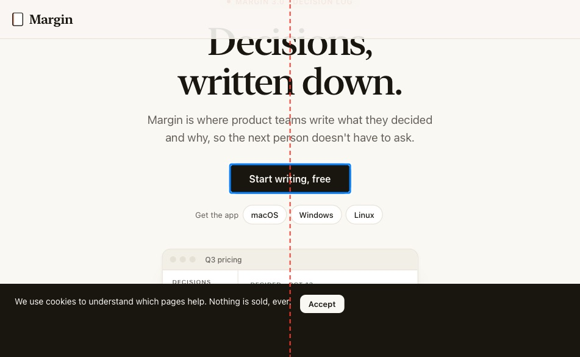

Control on the crease
Needs youTo fixOpen
a.lone "Start writing, free"
- 200px wide, spans x 376–576; the crease is at x = 475.5
Your call
"Start writing, free" is centred alone, so on the open screen it sits on the crease. Add a second button, such as "Take the tour", so the gap between them lands on the crease? Or keep one button and move it to the left on wide screens?
Options
A pair of equal buttons is the smaller change and reads better at every width, but it adds a call to action. That's a content decision, so it's yours.
test/broken.html:114
On the open screen the fold runs down the middle. Partly folded, a small control there is hard to tap. Apple: keep controls out of the fold.
crease:a-lone:start-writing-free